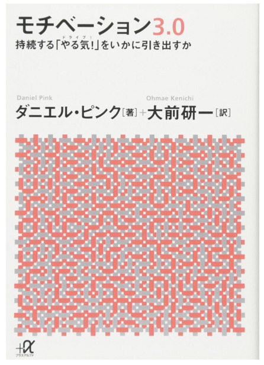

読書メモ: 世界標準の経営理論 - 第19章 モチベーションの理論
この記事は書かれてから1年以上が経過しており、最新の情報とは異なる可能性があります
前回の 読書メモ: 世界標準の経営理論 - 第18章 リーダーシップの理論 の続きを読んでいきます。
前回、少し触れたのですが、モチベーション周りの話は別の書籍（モチベーション3.0）という本をすでに読んでいて、 多少は触れてきてはいます。

https://www.amazon.co.jp/dp/4062816199/
この本めっちゃ好きなんですよねー。 それまではモチベーションが何なのかよく分かっていなかったので、 これ読んですっきりした記憶あります。
実は小さな紙媒体のやつで買って、常にカバンの中に忍ばせてあったりします。 そんでもってモチベーションの話題になって、カバン持っていたら「実はこんな本があってだな・・・」とたびたび進めたりはしてたり。
さて、今回はモチベーション周りの話題です。 「ここの理解少し間違ってるよ」などあれば、どしどしご指摘いただければと思います。
『第19章 モチベーションの理論』の概要
第19章はまとめるとこんな感じの内容でした。
- モチベーションとは 人を特定の行動に向かわせ、そこに熱意を持たせ、持続させること で、 外発的動機 のものと 内発的動機 のものがある
- 職務特性理論 の話の中で、内発的動機を高める5つ
- 多様性（variety） 、従事者の多様な能力を必要とする
- アイデンティティ（identity） 、最初から最後まで業務に携われる
- 有用性（significance） 、他者の生活・人生に影響を与えられる
- 自律性（autonomy） 、自律性を持ってできる
- フィードバック（feedback） 、成果を認識できる
- モチベーションの3大理論
- 期待理論 、外発性動機のような報酬制度と動機の関係を説明したもの
- ゴール設定理論 、よりチャレンジングなゴール設定であるほど燃える的なやつ
- 社会認知理論 、自身の能力への自信があればあるほどモチベ高まる的な話
- 最近の新しい理論、 プロソーシャル・モチベーション（PSM）
- 他人の視点に経ったときのモチベーション、他人に役立つことを面白い・楽しいと感じること
- これからは 内発的動機 x PSM を高めることが大事
外発的動機と内発的動機
モチベーションには種類があるよ、という話。
- 外発的動機
- 報酬、昇進など、外部から与えられる影響で高まるモチベーション
- 内発的動機
- 楽しみたい、やりたいといった、内面から湧き上がるモチベーション
これまでの実証研究で、外発的動機よりも内発的動機の方が、 個人の行動へのコミットメントや持続性を高める、ということが分かってきているんだそうで。
ちなみに本書からは逸れますが、外発的動機についても限定的ではあるが使えるところはあるよ、とモチベーション3.0の中では紹介されていて、 ただ両者に言えることとして、創造的な作業については内発的動機によるモチベーションが大事だよ、とされているようですね。
内発的動機を高める特性5つ
モチベーションに関する理論が合計6つほど紹介されていたのですが、 （1つ目はニーズ理論と呼ばれていて、5大欲求みたいなのもそこに含まれるらしいです） 2つ目の 職務特性理論 の中で、内発的動機を高める特性として5つ紹介されています。
- 多様性（variety） 、従事者の多様な能力を必要とする
- アイデンティティ（identity） 、最初から最後まで業務に携われる
- 有用性（significance） 、他者の生活・人生に影響を与えられる
- 自律性（autonomy） 、自律性を持ってできる
- フィードバック（feedback） 、成果を認識できる
以前の第13章で出てきた、ソニーの若手のエンジニアを合弁事業で作った小さなスタートアップ企業に移動させることで、 今まで大企業では弱かったアイデンティティやフィードバックという特性を、すべての業務プロセスに関わるようになることにより、 顧客の声に触れる機会も増えて、アイデンティティやフィードバックの指標が増え、モチベーションが高まるのだそうです。
なるほど。この辺の項目は内発的なモチベーションが高められるかどうかの指標になりそうですね。
モチベーションの3大理論
人間の認知には限界がある、というのをベースにしてます、みたいな話はちらほら出てきてますが、 ここでも 喜び、達成感、つらさなどは、人が認知して初めてモチベーションに影響を及ぼす よ、とされていて、 そこから現在の経営学の3大理論も生まれてきてます、という流れで、3つの理論が紹介されています。
期待理論
3大理論のコアとして図を交えて紹介されていて、 外発性動機のような報酬制度と動機の関係を説明したものなのですが、 なかなか図で書いてあるものを表現するのは難しいですねw
誘意性 x 期待（確率）が高いほど、その人は行動へのコミットメントを高める、とされていますが、 ここでいう誘意性とは、魅力のようなものと考えればいいでしょうか。 魅力が高くて、実際に期待値が高ければ高いほど、頑張れるみたいな、外発的動機を説明しやすい理論ともありますので、 こんな感じの理解でいいでしょうかね。
ゴール設定理論
期待理論に加えて、ゴールの設定についてを加えたものの話です。
命題として2つ提示されています。
- 人はより具体的で、より困難・チャレンジングなゴールを設定するほど、モチベーションを高める
- 人は、達成した成果について明確なフィードバックがある時、よりモチベーションを高める
星野リゾートの、大幅に現場に権限委譲する例が紹介されていて、 コンセプトだけが提示された状態で、それをどうやればいいかは現場の人に任せちゃうことで、 チャレンジングなゴールとなり、モチベーションが高まったという話や、 ミスに関するフィードバックについても、ミスをした人を絶対に叱らないなどのルールを作ることで、 フィードバックが多くでる、つまりはモチベーションがより高まるような方向に仕組み化していってるんだよ、という話がありました。
ここの代表取締役の星野さん、けっこうな頻度で WBS に取り上げられているのでよく拝見しますが、 いつも「すごい経営者だなー」と思って見てたりします。
社会認知理論
ゴール設定理論に比べて、 自己効力感（ self-efficacy ） の概念を加えたところが異なる点のようです。
自己効力感というのはなんだろう？と思って Wikipedia で見てみたところ、 一言で言うと『自分の可能性を認知していること、自分はできると信じられること』と言ってしまっていいのかもしれないですね。
https://ja.wikipedia.org/wiki/%E8%87%AA%E5%B7%B1%E5%8A%B9%E5%8A%9B%E6%84%9F
- 自己効力感の高い人は、実際の行動・努力の自己管理も徹底して行う
- 逆境でも努力を持続できる
- （したがって）優れた効果を上げやすい
- フィードバック効果でさらに自己効力感が増す
という感じで、モチベーションが高まるよ、とのことでした。なるほど。
じゃあ、大元の自己効力感はどうやって高めればいいの？という話には、4つほど要素として紹介されています。
- 過去の自分の行動成果の認知
- 要はフィードバック
- 代理経験
- 自分と似た人物が業務を成功させると、自分もできるはずだと考える
- 競争による相乗効果もこれ
- 社会的説得
- 君ならできる、といったポジティブな言葉を周囲からもらう
- 生理的状態
- 精神・生理的不安に陥ると、出来ないかもと思いがち
- 経営学では、この視点をもとにストレスマネジメントの研究も進んでいるそうな
プロソーシャル・モチベーション（PSM）
上記3つの理論とは別に、最近のモチベーションの理論として、 他人の視点に立ったときのモチベーションに関する理論 が最後に紹介されています。 これを プロソーシャル・モチベーション（ ProSocial Motivation, PSM ） と呼ぶそうです。
これは社会貢献のような大きなものだけではなく、顧客視点に立つとか、部下の視点に立つとか、そういった身近なものも含みますよ、とのことでした。
内発的動機 x PSM を高めることが大事
クリエイティブな仕事をする上で、内発的動機は大事なんじゃないの？という研究はいくつかされてきてはいたものの、 結果はまちまちだったそうで、内発的動機に加えて PSM が高い人であることが大事なのでは？という主張が出てきたそうです。
クリエイティビティで重要なものとして、
- 新奇性（ novelty ）
- 有用性（ usefulness ）
の2つが挙げられていますが、この条件って他人視点に立つこと、つまりは PSM が高いことが大事なんじゃない？と紹介されています。
本書ではリクルート社の事例が紹介されていましたが、 これからは内発的動機を高めつつも、それを他人視点で考えられること、つまりは内発的動機 x PSM が大事なんじゃないの？という形でまとめられています。 （併せて、 PSM と内発的動機の補完効果の研究は緒についたばかり、とあるので、コンセンサスが取れているレベルではないようです）
たぶん、最初のモチベーション研究って、アメとムチをどう与えるかみたいなところから始まったんだろうと思うんですけど、 この章の最後にも『ビジョン』『仕事の楽しさ』『他者視点』などを重視するようになってきている、と書かれてあって、 ずいぶんモチベーションに対する考え方って変わってきたんだろうなあと読みながら思ったのでした。
まとめ
- モチベーションには種類があって、内発的動機を高めるのが現代では大事
- 併せて他者視点も持つことで、個人のパフォーマンスを高めていく
自分自身のモチベーションについて考える機会にもなるし、 組織でやっている人にとっては他人のモチベーションを上げる、つまりはリーダーシップにもつながってくる話ですね。
個人的にも内発的動機についてのモチベーションは常々大事にしていきたいなと思っているので、 この章の話は非常に面白みがありました。
この記事は書かれてから1年以上が経過しており、最新の情報とは異なる可能性があります